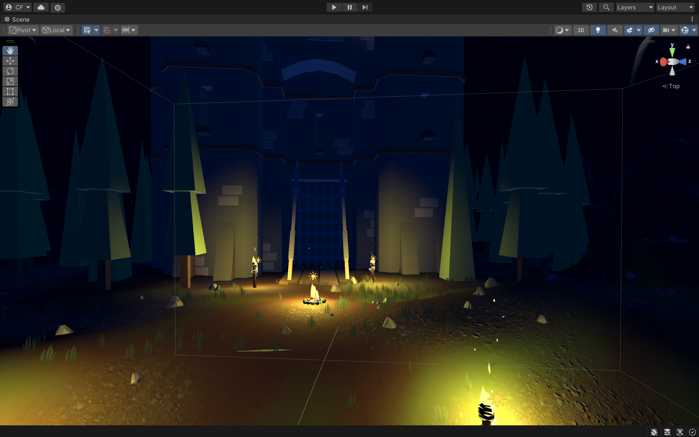
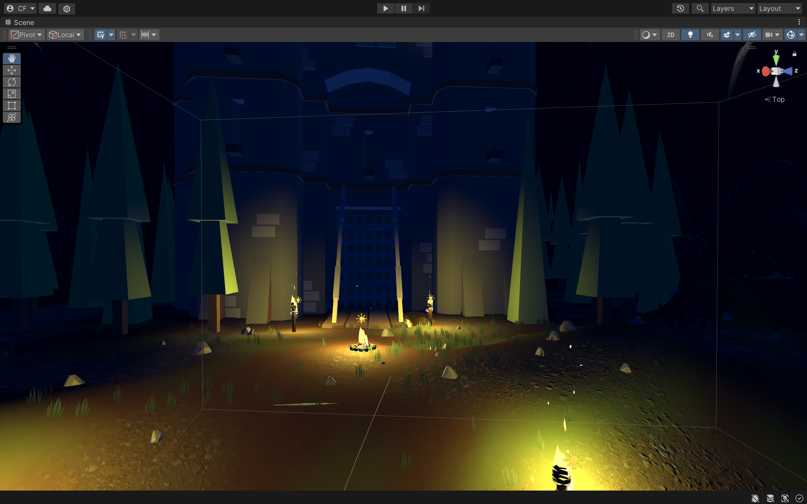
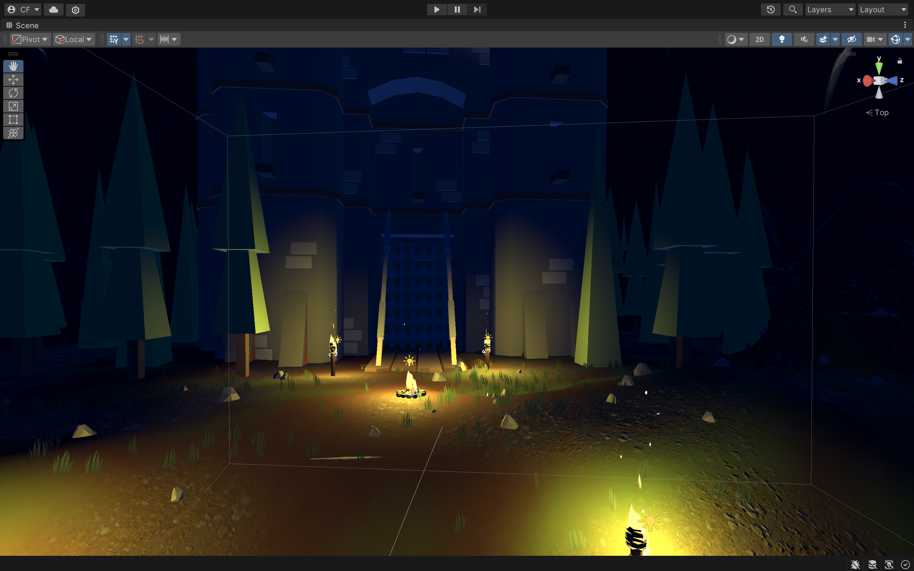

This Webpage is made to Log the process of my Virtual World. My virtual world was created originally with the thought of making an interactive video game type expierience, but I have now decided to use this virtual world as a set piece for a cinematic video. This Virtual Space was made with a combination of assets pulled from unity asset store. Many prephabs were created using pre exiting game objects and particle simulations. I feel that the lighting, fog, and ambient sounds really create a more emersive enviroment. I plan on using the cinemachine assets provided by Unity in order to create my cinematic video, and it will include a diverse range of camera motions. I hope that through this project I will learn more about creating cinematic virtual scenes.

Devlog 1:
For this devlog I have begun setting up the cinemachine virtual camera and dolly track to create my cinemtic walkthrough.
Devlog 2:
For This devlog I am continuing to lay my cinemachine track and dolly system, this time throughout the interior of the castle. In addition I am continuing my research into the cinemachine asset and I am learning new ways to move the camera.
Devlog 3:
For this devlog I am continuing to lay and refine my cinemachine dolly track and play around a bit with my virtual camera. I have also begun planning out the editing process for my cinematic video.
Devlog 4:
For this Devlog I have completed my dolly track and have begun recording clips to edit together. I have also Added a few mose effects to my scene to make it more imersive.
 
